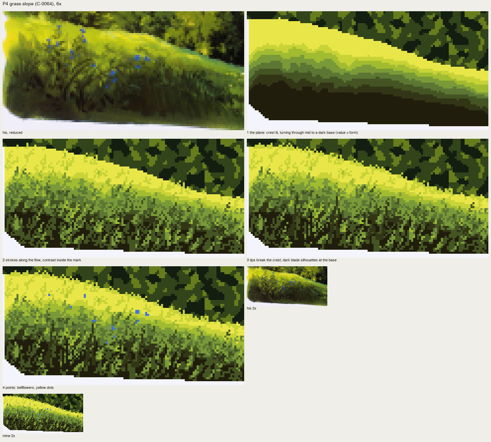

Grass: a plane first, then the strokes
Front page: the tutorial. Code: copies/p4_meadow.py, src/vocab.py tufts.
The hardest is simple ground. Keep in mind a flat plane with undulations, and grass growing on it. Otherwise the grass doesn't fit the plane and scatters. (p.53, C-0095)
P4 is the grass slope at the lower left of C-0064 (p.52), 122×60 px.

nb250. His slope at full size. A broad lemon crest where the plane faces the sun, turning through mid green to a dark base. Tapered strokes lean along the slope. Blue bellflowers on thin stems.
What's in it:
- the value turn is the whole form; the grass rides on it;
- strokes are tapered wedges leaning along the slope's flow, not vertical;
- contrast lives inside the mark: darker strokes in the lit band, lighter blades in the dark band, big dark blade silhouettes at the base;
- band boundaries are broken by blade tips, never a line;
- the lit crest is calm.
Stage 1: the plane
The value is a function of distance below the crest line, normalised by the slope's depth, modulated a little by his organised values (the lit swell at upper left), and cut into eight steps of the unmuddied ramp:
slope_top = lambda x: np.interp(x, [0, 16, 40, 70, 96, 122], [4, 3, 8, 16, 26, 30])
slope_bot = lambda x: np.interp(x, [0, 10, 60, 122], [46, 54, 56, 58])
d = yy - slope_top(xx)
depth = slope_bot(xx) - slope_top(xx)
u = d / depth # 0 at crest, 1 at base
Lm = (L - L[slope].mean()) / (L[slope].std() + 1e-6)
f = u - 0.12 * Lm # his value design, a little
names = ['lem', 'y1', 'y2', 'g1', 'g2', 'g3', 'g4', 'g5']
t = np.clip(f * 1.15, 0, 0.999) * len(names)
cv.a[slope] = np.array([I[n] for n in names])[np.floor(t).astype(int)][slope]
cv.a = majority(cv.a, 2)
This alone reads as a slope in the sun. Everything after is texture on a form that already exists.
Stage 2: wedges along the flow, one step off the band
The stroke is 2 px wide at its base and 1 px for the rest, at an angle. The slope falls to the lower left, so the strokes lean right, up the slope, at about 28°:
def wedge(cv, x, y, L, ang, idx, where=None):
"""a tapered stroke: 2 px wide at its base (x,y), 1 px for the rest, length L, angle (deg, 0=up)."""
a = np.radians(ang)
for k in range(L):
X = int(round(x + np.sin(a) * k)); Y = int(round(y - np.cos(a) * k))
for w in ([0, 1] if k < L // 3 else [0]):
...
cv.a[Y, X + w] = idx
Each stroke takes the local band's colour and moves it: a step darker in the lit band (short, 2–3 px), two steps lighter in the dark band (long, 3–7 px), one step either way in between. In the lit crest, more than half the candidate strokes are skipped:
if k <= 2:
if r.uniform() < 0.55: # the lit crest stays calm: few strokes (density at points)
continue
idx = I[names[min(k + 1, 7)]] # lit band: a darker stroke
Ls = int(r.integers(2, 4))
elif k >= 5:
idx = I[names[max(k - 2, 0)]] # dark band: a lighter blade
Ls = int(r.integers(3, 7))
wedge(cv, x, y, Ls, base_ang + r.normal(0, 10), idx, where=slope | trees)
The first pass had no skip, and the crest was as busy as the base. His crest is calm. That's density at the points, applied to one patch of grass.
Stages 3–4: tips and silhouettes, then the points
Blade tips break upward over the crest line into the trees behind, so the plane's top edge is a fringe. Fourteen big dark blades (8–16 px) and seven longer stems stand at the base. The bellflowers go where his blues are, and a few yellow dots at the right.

fig. P4 by stage, with his crop first, and at 2× at the end.

fig. His | mine, 6×.
Grass in the places
The same two stages, adjusted for view:
- Near, seen from above (the book: near grass drawn from above, far from the side). On Yakima's near bank the tufts are long straw blades, lit, with dark roots, getting longer toward the viewer:
python
L = int(3 + (y - 148) * 0.25 + r.integers(0, 4))
- Far, as a plane with tufts (
vocab.tufts). Short strokes that lengthen toward the bottom of the mask. In light, a dark stroke with a lit tip beside it; in shadow, a slightly lighter stroke. - Backlit (San Juan). The meadow plane glows far toward the sun and darkens near; the blades are dark with a lit tip in the light's colour. See how-to 9.